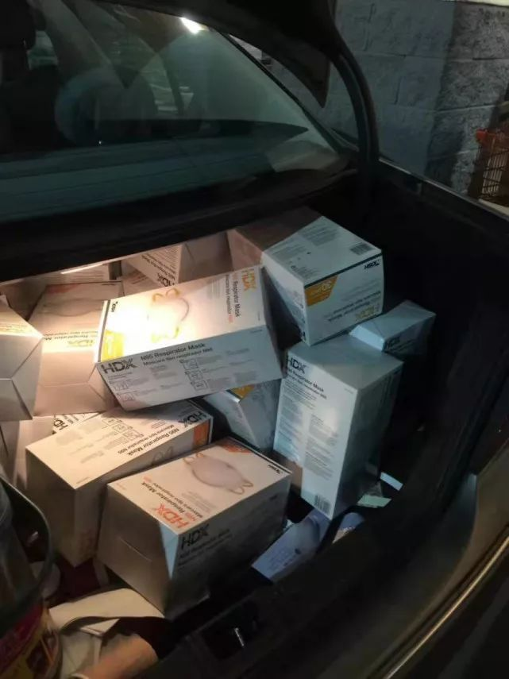
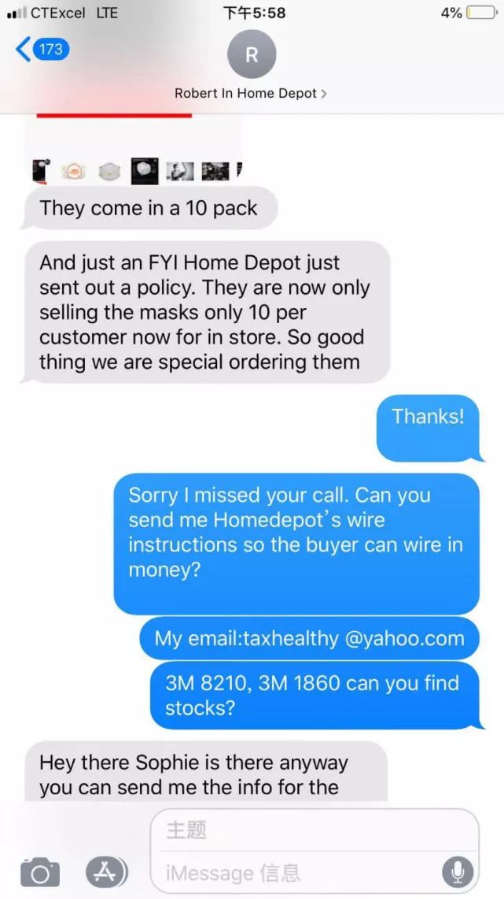

我是互联网人，我没有做逃兵
原文链接 备份链接 《战疫口述记》，是燃财经在新型冠状病毒肺炎期间推出的特别栏目，记录疫情亲历者的观察和感受。本文为第6篇，查看前5篇请点击《我和公司都快熬不住了》《节后返京，太太太南了》《我的“流浪”春节》《农村这样防肺炎》《我在武汉 …

来源：《潜望》
作者：纪振宇
在接受连线时，电话那一头的宋燕，正在前往办理非盈利机构账户的路上。
“我跟Home Depot那边打听到了，他们还可以订100万个口罩，”宋燕说，“但是只有非盈利机构才能够订购，无法以个人名义购买。”
新冠病毒疫情肆虐牵动着海外华人的心，尽快寄送口罩和其他医护用品到最急需的地方，成为了许多身在海外的华人们最朴素的愿望。
居住在美国加州硅谷地区的宋燕就是这其中的一员，她从最初的个人采购，到联合了周围的朋友组成采购志愿者小组，已经将成百上千的口罩和医护用品寄送回国内，但是最终这些口罩是否真正送达了一线医护人员的手中，宋燕对《潜望》表示，感觉像是“石沉大海”，完全无从知晓。有一批口罩因为是海外产品与国内标准不相符，被某院方定义为“三无”产品而拒绝发放给一线医护人员。
“太平洋都跨过了，最后几米的距离，（口罩）就是没法送到医护人员的手上。”宋燕对《潜望》说。
但她依然没有放弃努力，在办理非盈利机构账户的同时，她和志愿者团队寄送的第四批捐助货物，已经在浙大美国校友会安排的专机上正飞往上海的途中，由上海慈善总会接收。
“武汉那边送不到，我们只好选择寄往别的城市。”宋燕说。

“许多没见过的朋友在微信上转账给我”
宋燕是家住美国硅谷地区的华人，职业是会计师，来美国工作生活已经15年，曾就职于普华永道会计师事务所，目前自己经营一家事务所。
1月22日，刚忙完一个项目的宋燕回到家中，正在看电视的母亲告诉她：“新闻里说了，武汉医护人员的口罩都不够用了。”
宋燕说，之前有听说新型冠状病毒疫情在国内变的越来越严重，但没想到已经到了这个程度。
“知道这个消息以后，我下意识的反应是：赶快去买些口罩寄回去。”宋燕说。
当晚，宋燕便去往家附近的Home Depot大型连锁店，把这家店里货架上能找到的几十箱3M口罩和防护服全部买下，她还拍下了Home Depot工作人员爬上梯子为她取货的照片，并随手发在了朋友圈上。
“听说要寄到武汉灾区，Home Depot的Mark爬上高架子给我找口罩和防护服。”宋燕在朋友圈上写道。
接下来，事情发展地有些出乎她的意料。她的一些平日里熟悉的朋友，开始在微信上给她转账，诉求只有一个：“委托宋燕多买一些口罩，寄给武汉的医护人员。”
宋燕深受感动，她将收到的转账都截图并发在朋友圈上，接下来，更多的人转账给她，同样希望她多帮忙买一些口罩，寄给在第一线奋战的医护人员。

宋燕22日采购的口罩等医护用品塞满了车后备箱
“许多人我只是加了微信，甚至没见过面，”宋燕说，“他们有在美国的，也有国内的，有一些是日常工作上的联系。”
宋燕展示给《潜望》的微信截图显示，截至1月29日，她个人捐款89573.6元人民币，收到捐款75045.8元，这笔钱用于购买护目镜1000个总共30000元。
此外还从支付平台Venmo收到5人共计538美元的捐款，现金捐款100美元，支票捐款1113.72美元，Paypal捐款6,232美元。
“目前已经从美国发出两批口罩、护目镜和防护服，1月27日搭乘海南航空，”宋燕对《潜望》说，“第二批货物1月29日发出，经红十字、中国邮政绿色通道送往武汉。”
“太平洋都跨过了 最后几米距离就是送不到医生的手上”
由于此前从未有过相关经验，最初宋燕完全是个人自发捐助，后来又联合了一些朋友帮忙去做医疗物资采购。
“最多的时候我们的采购群有30几个志愿者，”与宋燕同为志愿者的Cathy说，“有些志愿者早上5点多就出门去扫货，经常晚上11点都还在外面采购。”
1月23日，宋燕组织的第一箱货物通过美国邮政USPS邮寄，但这批货要2月5日才能到货，她总结说是因为缺乏相关的经验，否则不会找这么慢的物流渠道。
“接着第二批货我们找到一个可靠的海外物流，总共5个包裹，通过海航的绿色通道到达北京红十字会，再由北京红十字会当天转到武汉红十字会。”负责海外物流的Cathy说。
除此之外，宋燕和志愿者组织想到了直接将医疗物品寄送给医护人员个人的办法，他们联系了国内的资源，建立了一个与医生的对接群，第三批货物通过物流公司，以个人包裹的方式，共选取了8家医院的工作人员，直接邮寄给个人。
“我们要求对接群内的医院对接人在入群前先验明身份，然后收货后将个人工卡和医院收据共同拍照，以保证这些物资确实送到了医护人员的手中。”宋燕说。
但即便是这样，根据宋燕的叙述，这批口罩依然无法最终交到在疫情第一线工作的医护人员手中。
“一批口罩被一家医院认定为是“三无”产品，”宋燕说，“因为是美国购买的，并不符合中国的相关标准，因此院方拒绝将这些口罩直接交给医生用。”
宋燕感到纳闷又无奈，自己都是在美国正规零售店里购买的3M口罩，怎么到了国内就成了“三无”产品？
“连太平洋都跨越了，口罩都到了医院，最后几米的距离，就是送不到医生的手上。”宋燕沮丧地说。
即便是直接寄送给疫情一线工作的医生，他们也不被允许直接使用未经许可的医护用品。宋燕说，如果擅自使用，院方会直接开除处理。
碰到这些阻碍的宋燕，只能决定，接下来的捐助物品不再寄往武汉，她找到浙江大学校友会，后者组织了专机直飞上海，宋燕采购的第四批货物搭乘这架飞机，直接交给上海慈善总会送长海医院。
宋燕说，在这四批货物的运送过程中，他们的临时志愿者团队，利用各自在国内的资源，与国内紧密配合，包括验证国内医院对接人身份，保证货物落实到位等。
“因为捐款人的目标就是要将这些医疗物资送到医生手中，”宋燕说，“我们不需要红十字会登记注册，只需要保护医生、保护市民，多一个口罩就有希望少一个传染。”

100万口罩订单可下 需非盈利机构才有资格采购
频繁跑Home Depot，宋燕与工作人员逐渐熟悉起来。他们告诉她，可以通过特别订单的方式，下数量很大的订单，最多可以有100万个口罩的订单可以下。
Home Depot 给出的大额采购价格，平均每只口罩约1美元，是平时零售价的一半。宋燕得到这个消息很兴奋，但在准备购买时，被告知，只有非盈利机构才有资格购买，个人不允许购买。
“因为美国刚刚宣布进入公共卫生事件紧急状态，因此控制这些关键医疗用品的采购，”宋燕说。
1月31日，在世界卫生组织宣布中国新冠病毒疫情构成全球公共卫生紧急事件后，美国也宣布进入全国公共卫生紧急状态，严格限制中美之间的旅行，对于刚从中国回到美国的人员进行长达14天的隔离。
Home Depot等供应口罩的大型零售商随后实施了零售每人限购10只的政策。

宋燕与Home Depot工作人员的短信交流截图，在美国政府宣布公共卫生紧急状态后，
Home Depot实施了每人限购10只口罩的政策
于是宋燕开始筹划成立非盈利机构的事，之前的捐助经历也让她意识到，光靠个人的零散的捐款，获得的资金有限，并且采购效率也不高，再加上他们身处的美国一些城市的一些医疗物资也已经开始紧缺了，靠零敲碎打已经无法组织起大规模的采购。
正好宋燕之前认识的一位朋友成立了一家非盈利组织，在征得同意后，宋燕得以以这家协会的名义，向Home Depot进行大额订购，现在宋燕正前往银行开立非盈利机构账户。
作为一名会计专业人员，宋燕之前有过帮助客户开立非盈利机构账户的经验。她表示，非盈利机构账户与普通账户的区别主要在于税务方面，在美国非盈利账户享受一定程度的免税，但需要证据充足，在每年的报税期提交相应的款项支出的具体信息。
宋燕向《潜望》展示了一张Home Depot第一批20万个口罩的订单的拍摄照片，共9999盒，每盒20个口罩，总价格210,878.91美元。遗憾的是，由于未能及时完成非盈利机构的相关手续，这笔订单已经被取消。

宋燕展示的一张总数20万个口罩的Home Depot订单
在账户开立完成之后，宋燕还急需找到捐赠的钱，100万个口罩差不多就是100万美元，之前宋燕联系到一些国内的机构有意向，但又涉及到中美之间换汇，这个方案未能完成。
“如果现在有美国机构愿意直接捐助这笔钱，现在就能拿下这个订单。”宋燕说，“虽然100万个在目前的情况下也是杯水车薪，但多一个就多一些希望。”

点击图片阅读更多


点击在看，即刻变好看

原文链接 备份链接 《战疫口述记》，是燃财经在新型冠状病毒肺炎期间推出的特别栏目，记录疫情亲历者的观察和感受。本文为第6篇，查看前5篇请点击《我和公司都快熬不住了》《节后返京，太太太南了》《我的“流浪”春节》《农村这样防肺炎》《我在武汉 …
原文链接 备份链接 1⁄7 *不为这座城市做点什么，最后，可能这座城市就完了……* 2020年1月30日 @雷锋小杨 坐标：武汉 大家就叫我雷锋小杨吧，我也不想留名。 我是武汉人，做酒店管理工作。我们的酒店在远城区，现在还在营 …
原文链接 备份链接 【财新网】（记者 钱童）一面是全球企业和机构各类物资支援，一面是医院领不到物资公开向社会求援，防疫物资到底在哪里？多位工厂、捐赠和采购方人士告诉财新记者，目前确实面临瓶颈：国内生产或者捐赠的物资被接管，统一调配，多有 …
原文链接 备份链接 「不是告急！是没有了！！」近两日，武汉协和医院、中南医院再次通过社交网络对外募集物资，对此，网友们纷纷发表质疑：全国各地都在往武汉捐医疗物资，物资到底去哪了？ 文 | 易方兴 郑丹 编辑 | 金石 采购难 没货，没货， …
原文链接 备份链接 武汉市已将所有捐赠物资集中统一调配，这有助于物尽其用，但配送效率亟须提升。这几日陆续有社会捐赠物资送到武汉协和医院，但仅有一线医护人员能穿上防护服，很多医用物资仍然紧缺 文 |《财经》 …